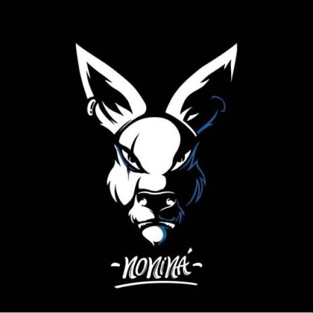

🥇
2025
Mejor Charanga
XI Festival Nacional de Charangas · Poza de la Sal (Burgos)

La charanga de Málaga con la que lo gozarás y disfrutarás: No Ni Ná.
🥇 Mejor Charanga 2025 🥁 Mejor Percusión 2025 🏆 1er Premio Padul 2026No lo decimos nosotros: lo dicen los jurados. Desde Málaga hasta Burgos, representando a Andalucía.
XI Festival Nacional de Charangas · Poza de la Sal (Burgos)
XI Festival Nacional de Charangas · Poza de la Sal (Burgos)
VI Festival de Charangas Villa de Padul (Granada)
Exhibición como campeones en el XII Festival Nacional de Poza de la Sal
La actuación con la que nos llevamos el primer premio: música, espectáculo y cientos de personas dándolo todo. Así suena lo que llevaríamos a tu fiesta.
Llevamos la fiesta allá donde haga falta. Tú pones el sitio, nosotros el jaleo.
Salida de la iglesia, entrada al banquete o el fin de fiesta. Que nadie se quede sentado.
Casetas, carretas y caminos. Pasodobles, clásicos y lo que pida el cuerpo.
Patronales, verbenas y pasacalles para que el pueblo entero salga a la calle.
Sorpresa asegurada. Aparecemos, liamos la fiesta y la historia se cuenta sola.
Reyes, carnaval o desfiles: ritmo en movimiento de principio a fin.
Inauguraciones, cenas y team buildings con un toque que nadie olvida.
Por WhatsApp, el formulario o nuestro chatbot.
Te damos precio cerrado sin compromiso.
Confirmamos la fecha y la guardamos para ti.
Llegamos, tocamos y la fiesta explota.
Un poco de todo para que baile desde el abuelo hasta el más peque.
¿Tienes una canción especial? Pregúntanos y la preparamos.
Somos una charanga de Málaga y tocamos en toda la provincia: Málaga capital, la Costa del Sol, el Valle del Guadalhorce, la Axarquía, la comarca de Antequera y la Serranía de Ronda. Si buscas contratar una charanga para una boda, una feria, una despedida o la fiesta de tu pueblo, somos la que se llevó el premio a Mejor Charanga 2025 en el Festival Nacional de Charangas de Poza de la Sal.
¿Tu fiesta es fuera de Málaga? Hemos tocado en Granada y en Burgos, así que nos movemos por toda Andalucía y por España. Cuéntanos dónde es y te damos presupuesto con el desplazamiento incluido.
¿No encuentras tu duda?
Rellena el formulario y te llega directo a nuestro WhatsApp con todos los datos.